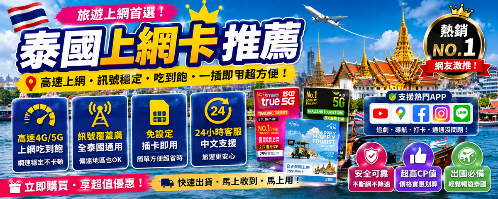

☰
首頁
日本自由行
東京5天4夜行程
東京住宿推薦
日本藥妝必買清單
關西交通票券指南
北海道冬季賞雪
沖繩自駕攻略
京都寺廟散步地圖
大阪美食攻略
大阪環球影城
日本預算指南
福岡5天4夜攻略
日本賞櫻季攻略
日本省錢密技
韓國自由行
首爾必吃美食攻略
釜山膠囊列車預約
釜山4天3夜攻略
濟州島自駕環島
韓國預算解析
首爾5天4夜攻略
韓國交通攻略
韓國省錢密技
首爾美食地圖
台灣旅遊
花東三天兩夜
台南美食牛肉湯
墾丁海景夜市攻略
台北美食地圖
九份老街攻略
東南亞自由行
清邁數位遊牧指南
曼谷吃貨攻略
曼谷按摩推薦
越南峴港攻略
新加坡3天2夜攻略
吉隆坡3天2夜攻略
吳哥窟2天1夜攻略
泰國eSIM指南
東南亞預算攻略
胡志明市3天2夜
旅遊工具
旅遊工具合集
各國插座電壓指南
廉航搶票攻略
里程累積試算器
出國打包清單
eSIM比較推薦
免稅退稅試算器
Notion旅遊模板
關於我們
✈ 用最少預算，走最多地方

🌏 旅遊攻略
泰國上網卡推薦
📅 2026年最新
✈️ 均在路上
✈ 用最少預算，走最多地方
🔥 点此查看最新優惠 →
📊 三家比較
📶 AIS
📶 TrueMove
📶 DTAC
🛒 購買教學
❓ FAQ
📊 泰國三大電信總覽
泰國主要有三家電信：
AIS
、
TrueMove
、
DTAC
。以下是他們的特色與適合場景：
電信
訊號覆蓋
網速
價格
適合場景
AIS
⭐⭐⭐⭐⭐
最快
中等
清邁山區、郊區、全泰國
TrueMove
⭐⭐⭐⭐
城市快
便宜
曼谷、普吉島、城市旅遊
DTAC
⭐⭐⭐
中等
最便宜
預算有限、城市短期旅遊
💡 快速結論：
不知道選哪一家？選
AIS
就對了！訊號最穩、速度最快，清邁山區與曼谷市區都表現優異，價格只比TrueMove貴一點點，CP值最高。
📶 AIS 實測心得
📖 延伸閱讀
東南亞自由行
清邁7天數位遊牧指南
東南亞自由行
曼谷3天2夜經典行程｜大皇宮×考山路
旅遊工具
各國eSIM比較｜旅行上網卡選購指南